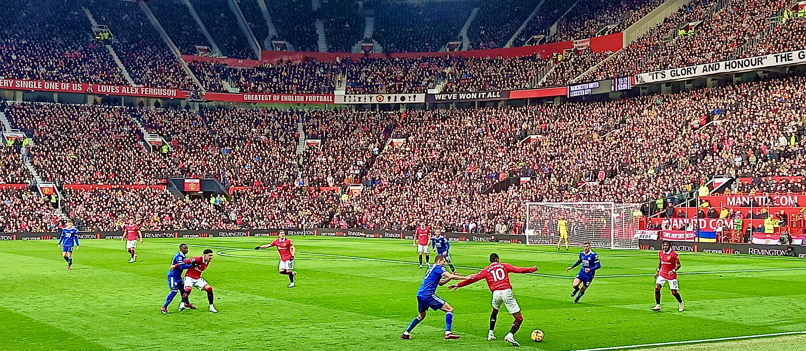
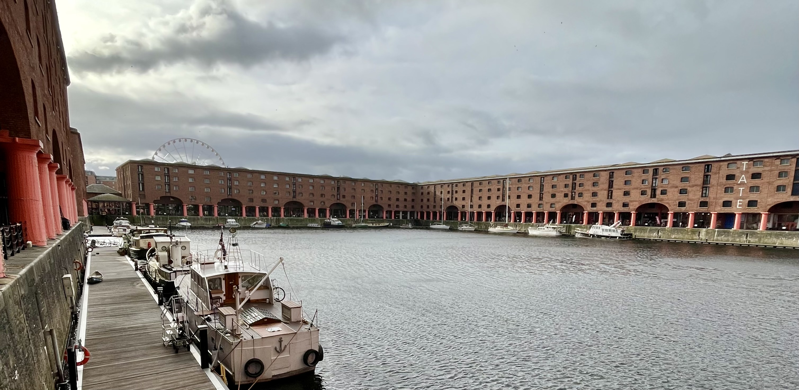
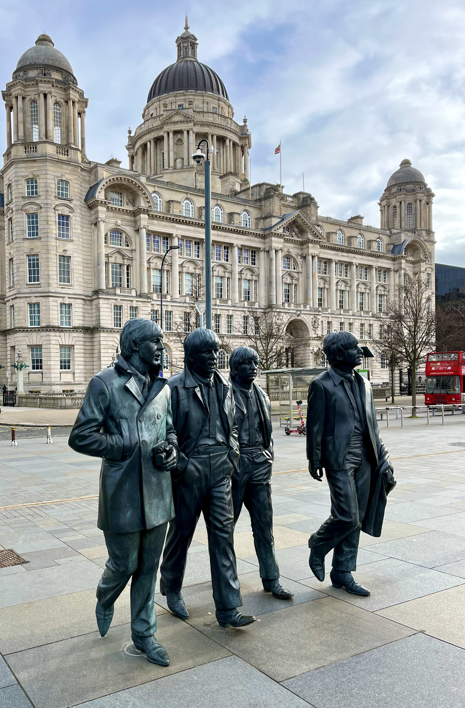
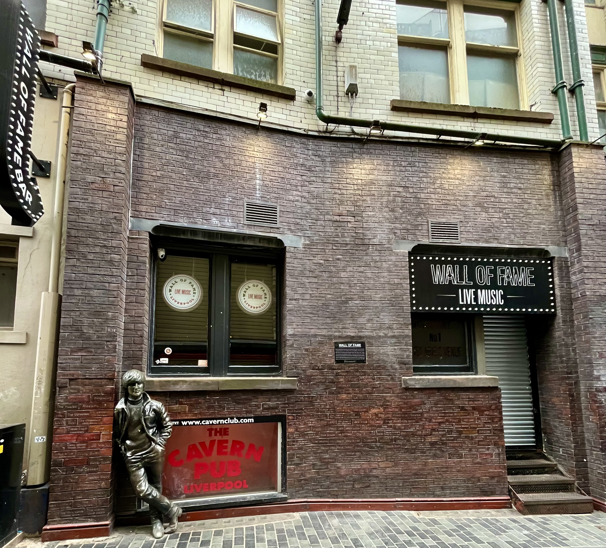
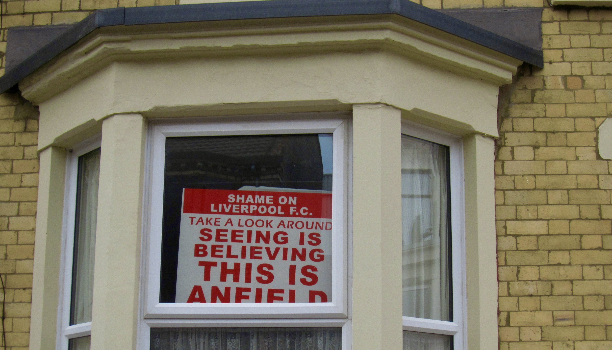
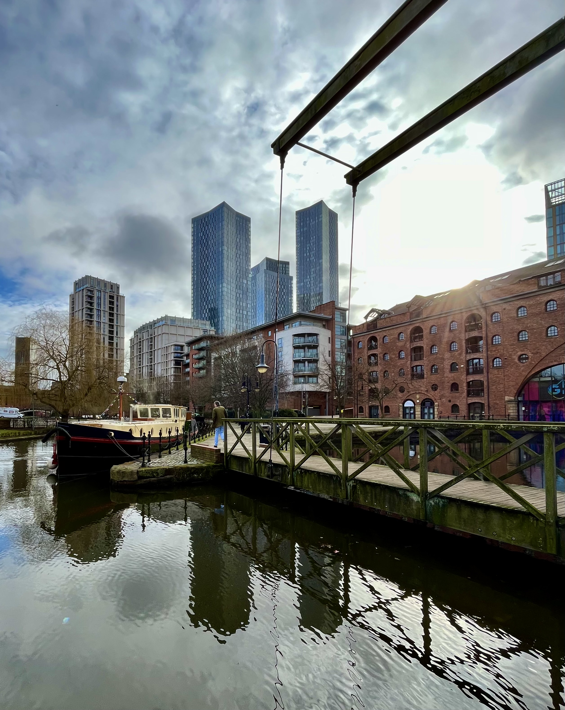
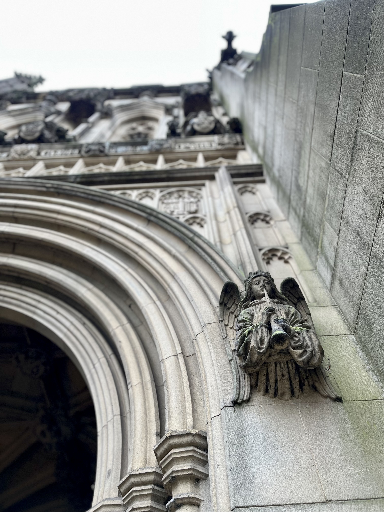
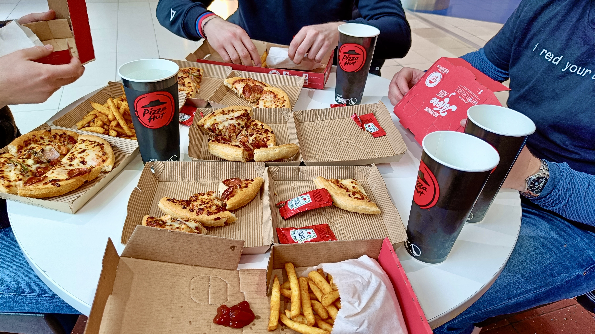
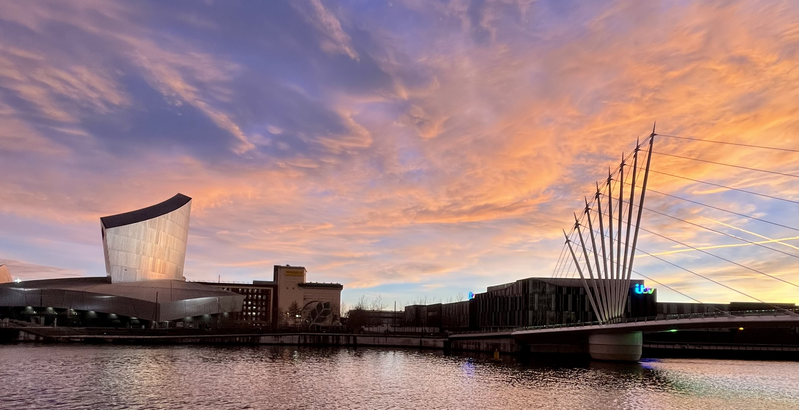
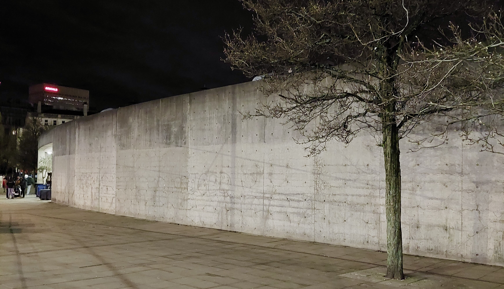

Liverpool & Manchester únor 2023

Jak si možná pozorní čtenáři mého blogýsku pamatují, minulý rok jsme vyrazili s fanoušky kvalitního fotbalu na dva zápasy do Madridu. Odtamtud jsme se vraceli s megalomanskými sny, které bychom si ještě rádi splnili. A protože nejvýše na našem pomyslném seznamu priorit figurovala Premier League, která byla navíc v porovnání s ostatními položkami na seznamu relativně lehce dostupná, je logické, že naše další výprava směřovala právě do Anglie.
Musím ještě doplnit, že naše skupina fanoušků kvalitního fotbalu se od minulého roku rozrostla o 100 % (ze tří na šest členů) a každý měl malinko jiné preference. I tak se ale nakonec pět z nás shodlo, že bychom mohli vyrazit na dva zápasy 24. kola Premier League do severozápadní Anglie, konrétně do Liverpoolu a Manchesteru. Abych byl naprosto upřímný, i když jsem fanoušek londýnské Chelsea, osobně jsem chtěl vidět buď Manchester United, Liverpool, Newcastle, nebo klidně i všechny tři kluby zároveň. I proto jsem vzal iniciativu plánování zájezdu do svých rukou a navrhl jsem program, při kterém bychom jeden den viděli zápas o záchranu mezi Evertonem a Leedsem a poté druhý den zápas Manchesteru United proti Leicesteru. K mému překvapení tento návrh odsouhlasilo pět z šesti našich členů, a tak se jelo!
DEN 0
Co se ale nestalo? Den odjezdu připadl na pátek a mně se nikam nechtělo. Celý týden jsem totiž řešil svoji přednášku na čtvrteční meet-up v Bratislavě a když jsem se z něj v noci vrátil, poslední, co se mi chtělo, bylo trmácet se ještě do Anglie. V jednu chvíli dokonce hrozilo, že bych ještě přímo z Manchesteru letěl na konferenci do Namibie, a i když jsem byl z představy návštěvy Afriky nadšený, nakonec jsem byl rád, že tato možnost padla a po výletu do Manchesteru mě místo dvacetihodinového letu čekal zasloužený odpočinek.
Velké nadšení ale nepřišlo ani ve chvíli, kdy nám pár hodin před odjezdem jeden ze členů naší výpravy napsal, že se vrátil od lékaře s angínou, antibiotiky a silným doporučením, aby nikam nejezdil. Nedalo se ale nic dělat. I když mě to mrzelo, sbalili jsme příruční zavazadla a na výlet vyrazili ve čtyřech. Jestliže jsem byl ale před odjezdem mrzutý, vše se změnilo, když jsem kolem páté hodiny odpoledne dorazil do vstupní haly vlakového nádraží v Brně a uviděl známé tváře. Začaly padat první vtípky, já se uvolnil a do vlaku jsem už nastupoval s úsměvem na tváři. A věřím, že ten mi vydržel až do Prahy, kam jsme dorazili kolem osmé hodiny večer. Z vlakového nádraží jsme se prošli do Karlína, konkrétně do Bistra Kro, kde jsme si sedli na pozdní večeři. Kluci ochutnali na míle vyhlášené kuře, já vyzkoušel tempeh s rýží, který jsem v podniku ještě nikdy dříve neměl. Po večeři jsme se přesunuli do budovy našich kanceláří a já ukázal ostatním svůj stůl, bar i rakvičky, ve kterých jsme měli strávit následující noc. Před spaním jsme si zahráli dvě partičky stolního fotbálku a kolem jedenácté hodiny šli spát.
DEN 1
Noc ve spací buňce nebyla moc příjemná. Všem bylo horko, nikdo z nás nemohl usnout a budíček nekompromisně zazvonil už ve čtyři hodiny ráno. Sbalili jsme si věci, Bert s Martym si rychle zahráli FIFAu a kolem půl páté jsme už stáli na Rohanském nábřeží a čekali na Uber. Přijela pro nás paní Lucie. Při nástupu do zakouřeného auta jsem si říkal, že ranní sprcha asi byla zbytečná. Naštěstí cesta na letiště netrvala dlouho. Po pasové kontrole jsme se přesunuli k bezpečnostní kontrole. Ve frontě před námi jsem zahlédl známou tvář z Krásenska. Jednalo se o Luboše, který chodil s Bájou do třídy na gymplu. Po krátkém rozhovoru jsme se dozvěděli, že se chystá navštívit dalšího Bájina spolužáka z gymplu žijícího v Anglii a v rámci společného programu plánují zajít na stejný zápas Manchesteru United jako my. To je mi ale náhoda!
V letadle jsme seděli na jiných místech, ale každý z nás strávil let stejně, protože jsme se snažili usnout a dohnat tak spánkový deficit. Každému z nás se to alespoň částečně podařilo, takže když jsme přistáli v Manchesteru před osmou hodinou místního času, všichni jsme byli relativně odpočatí a připravení na nová dobrodružství!
A první z nich přišlo hned ve chvíli, když jsem chtěl zaplatit Uber mojí Revolut platební kartou. Stáli jsme před příletovou halou, já koukal do mobilu a nechápal, proč aplikace každou platbu zamítá. Plán přesunout se do centra Liverpoolu autem jsme tedy po několika neúspěšných pokusech zavrhli a rozhodli se jet autobusem, který odjížděl až za další hodinu. Mezitím jsme zašli na snídani do Café Nero, kde byla moje platba kartou znovu zamítnuta. V tu chvíli jsem byl už opravdu dost nervózní a nechápal jsem, co se děje. Zkusil jsem proto napsat Ritě na podporu Revolutu tuto zprávu:
Rita, I have enough money, but every transaction is declined. What is the problem, please?
Když nikdo neodpovídal, mírně s nadsázkou jsem ještě doplnil:
Please, help! I am in UK with no cash!
V průběhu hodinového přesunu autobusem z manchesterského letiště do centra Liverpoolu mi Rita odepsala, že problém vyřešila a už bych měl být schopný kartu používat. Skvělý, první dobrodružství odškrtnuto! ✅
V Liverpoolu jsme vystoupili na autobusovém nádraží One Bus Station, které se nachází hned vedle Royal Albert Dock. Jedná se o komplex přístavních budov, které byly na základě návrhu Jesse Hartleyho a Philipa Hardwicka postaveny pouze z litiny, cihel a kamene. Tzn. bez použití jakéhokoliv dřeva, díky čemuž se jednalo o první nehořlavý sklad na světě. V době své výstavby byl přístav považován za revoluční, protože lodě byly nakládány, resp. vykládány přímo z, resp. do skladů. Díky svému otevřenému, ale bezpečnému návrhu se dok stal oblíbeným skladištěm cenných surovin, jako je brandy, bavlna, čaj, hedvábí, tabák, slonovina a cukr. Dnes se v budovách přístavu nachází tři muzea a dva hotely.

Komplex přístavních budov Royal Albert Dock.
My jsme nešli do muzea ani hotelu, ale prošli jsme si celý komplex, udělali pár fotek a pokračovali jsme po nábřeží řeky Mersey dále k liverpoolskému muzeu. Za ním se nachází skupinka náhodných pouličních umělců, kteří jsou v Liverpoolu známí pod označením “The Beatles”. Na můj vkus vypadali hodně strnule, což pro umělce není úplně dobré. Ostatně posuďte sami, jak na vás působí na následující fotce.

Buskeři přitahující pozornost turistů na liverpoolském nábřeží.
Naše cesta poté směřovala do centra centra města, konkrétně na Mathew Street, kde se nachází Wall of Fame. To je zeď hudebního klubu Cavern Club, na které jsou vypsána jména umělců vystupujících v původním klubu. Mezi jmény se samozřejmě nachází i The Beatles. Ti v klubu hráli pravidelně, zvláště na začátku své kariéry. Kromě nejslavnější liverpoolské skupiny ale bystré oko najde na zdi i jména jako Eric Clapton, Judas Priest, The Who, Oasis, nebo třeba Ian Anderson.

Zeď klubu Cavern Club, o kterou se opírá bronzová socha Johna Lennona.
Po krátké prohlídce města jsme se přesunuli na oběd do restaurace Nando’s. Rozhodli jsme se utužit partu, a tak jsme si objednali dva sdílené talíře s celkem osmi velkými kusy kuřat a pěti přílohami. Já osobně moc nestál o hranolky ani česnekový chleba, proto jsem si svoje dvě kuřata snědl s pikantní rýží. Myslím, že posezení v podniku prospělo nám všem, zvlášť když si uvědomím, jak jsme vymrzli ráno na liverpoolském nábřeží.
Po obědě jsme se přesunuli k nejbližší hlavní cestě, já vytáhl z kapsy telefon a objednal jízdu Uberem k úschovně věcí kousek od Goodison Parku. Překvapením pro mě bylo, když se po chvilce v aplikaci ukázalo, že jízdu potvrdil řidič se jménem John Joseph. V Anglii nás vozili většinou řidiči se jmény jako Adil, Mohammad, Mengistu, nebo Melake. Vě většině případů se tedy jednalo o řidiče tmavé pleti, kteří moc nemluvili, občas zapomněli na to, že máte v kufru zavazadla, a tak odjeli i s nimi, ale vždy byli velice milí a úslužní. Naprostým opakem byl John Joseph. Usměvavý Angličan se silným severským přízvukem se přiřítil se svým velkým Fordem, vystoupil z auta a ochotně otevřel kufr, aby nám ukázal místo, kam si můžeme uložit svá zavazadla. Když jsme vyrazili na cestu, doprava byla celkem hustá. Svérázný Angličan se ale nebál přejíždět semafory na červenou a plyn přidával i ve chvílích, kdy já bych raději brzdil. Abych se tedy nemusel tolik soustředit na zběsilou jízdu, rozhodl jsem se s ním konverzovat. A protože jsme byli v Anglii, začal jsem jak jinak než o fotbale. Nedřív jsem se ptal, zda fandí Liverpoolu, nebo Evertonu. On mi sarkasticky odpověděl, že se stačí podívat na jeho pleš a musím poznat, že se jedná o typického fanouška Evertonu. Upřímně nevím, zda to myslel tak, že fanoušci modré části města jsou spíše starší, nebo poukazoval na skutečnost, že Evertonu se v poslední době moc nedaří. Jak tam znám Johna, nedivil bych se, kdyby se jednalo spíše o druhou možnost. Oba jsme poté zkoušeli predikovat výsledek zápasu. Já jsem favorizoval Leeds, John naopak věřil klubu svého srdce. Chvíli jsme se bavili i o trenérech mužstva a jeho názoru na ně. Naši konverzaci ale přerušil komentář fotbalového zápasu mezi Aston Villou a Arsenalem, který John poslouchal v rádiu. Philippe Coutinho právě dal gól na 2:1 a klub z Birminghamu se tak ujal vedení v zápasu nad lídrem celé ligy. Mezitím jsme přijeli do cílové stanice naší cesty. John Joseph nás vysadil u krajnice a potom se otočil na frekventované čtyřproudé silnici a frčel zpět směrem do centra města. Klasický John!
My jsme si nechali batohy v úschovně zavazadel a následně jsme vyrazili ke stadionu. Nejdřív jsme si celý stadion zasazený “jakoby nic” do nízké rezidenční zástavby obešli a zastavili jsme se i ve fanshopu se suvenýry. Dost nás překvapilo, že dresy domácího mužstva se prodávaly pouze za symbolickou cenu 30 GBP. Byly sice bez potisku, ale ve srovnání s cenami jiných klubů byly skoro zadarmo. Pro srovnání uvádím, že o den později jsme viděli ve fanshopu Manchesteru United dresy za skoro 90 GBP. Po krátké prohlídce okolí stadionu jsme se přesunuli do jeho útrob.
U vstupu jsme ukázali vstupenky a úzkými turnikety jsme se protáhli dovnitř. Vyšli jsme po příkrých schodech do prvního patry a ocitli jsme se na úzké chodbě, kde skupinky fanoušků sledovaly konec výše zmiňovaného zápasu mezi Aston Villou a Arsenalem. V tu chvíli už Arsenal vyhrával 2:4, což znamenalo, že překvapení se nakonec nekonalo. Po skončení přímého přenosu jsme se rozdělili. Měli jsme totiž zakoupené lístky na sedadla po dvojicích. První půlku zápasu jsme s Kubou sledovali z poslední řady pod střechou stadionu na tribuně Bullens Stand v sektoru UB4. Na druhou půlku jsme se s Bertem a Martym vyměnili a přesunuli jsme se do druhé řady stejného sektoru. Naprosto narovinu, místa pod střechou nebyla ideální. Když jsem si stoupl, výhled na půlku hřiště mi zakrývala konstrukce střechy a když jsem seděl, v části mého výhledu stál sloup. Naopak místa ve druhé řadě stejné tribuny bych označil za jedna z nejlepších na stadionu. Přímo naproti přes hřiště se ve stejné výšce nacházela VIP sekce a celé hřiště jsme měli jako na dlani. Byl jsem proto i rád, že právě ve druhé půli padl jediný gól utkání z kopačky Séamuse Colemana, který zajistil domácímu týmu tři body do tabulky Premier League.
Co se týče samotného utkání, bylo patrné, že se jedná o souboj týmů z chvostu tabulky. Zápas provázelo mnoho nepřesností na obou stranách a z fanoušků sedících kolem nás byla cítit nervozita. Nebylo se ale čemu divit, před utkáním se Everton nacházel v zóně sestupu a na to v Goodison Parku nejsou úplně zvyklí. Nároční fanoušci proto každou nepřesnost ohodnotili nelichotivými nadávkami a každý vyhraný souboj ocenili potleskem. Přestože před utkáním Everton dělil od jejich soupeře pouze bod, bylo vidět, kdo hraje doma. Blues nedovolili Leedsu zahrozit z žádné větší šance a celé utkání tak spíše dominovali. Tuto skutečnost potvrzuje i statistika střel na bránu, kterou karamelky ovládly v poměru 6:0. Jediným výrazným momentem, do kterého se tedy zapojili i hráči Leedsu tak zůstala velká strkanice z první půle, do které se zapojili snad všichni hráči na hřišti! Na sestřih utkání s domácím komentářem se můžete podívat zde.

Výhled z našich exkluzivních míst ve druhé půli zápasu mezi Evertonem a Leedsem.
Po zápase jsme si vyzvedli zavazadla z úschovny a vydali se na jednu z nejslavnějších fotbalových adres na světě - Anfield Road, kde se nachází stadion fotbalového klubu Liverpool FC. Ten stojí jen 900 metrů od stadionu největšího městského rivala. Ač cesta nebyla úplně dlouhá, nebyla ani úplně hezká. Nejdřív jsme narazili na park, který jeden z členů naší skupiny nazval “loukou” a pokračovali kolem něj, než jsme se ocitli v zástavbě nízkých rodinných domů, kde žačalo být patrné, že se dostáváme do “červené” části města. Když jsme ale odbočili do úzké uličky, která nás měla dovézt až ke stadionu, z obou stran nás obklopily vysoké zdi pokryté ostnatými dráty, které chránily tamní domy před nezvanými hosty. Za domy na druhé straně jsme mohli vidět rozsáhlý brownfield pokrytý velkým množstvím odpadků. Na konci uličky se už rýsoval moderní stadion, ale prostředí působilo spíše jako válečná fronta než zázemí slavné fotbalové značky. Předpokládám, že bydlení v okolí stadionu, který pojme více než 50.000 fanoušků, přináší určitou daň. Ne každý návštěvník se asi chová jako pravý anglický gentleman a ne každý si po spláchnutí žalu z prohry pamatuje, kde bydlí. I proto si někteří sousedé slavného stadionu dávají na své ploty ostnaté dráty, nebo do oken vystavují transparenty s kritikou politiků a samotného klubu, aby poukázali na odvrácenou tvář slavného Anfieldu!

Kritika slavného klubu za jedním z oken poblíž stadionu Anfield. Zdroj: https://footballandmaterialculture.com/2013/04/07/anfield-road-liverpool/
Než jsme se dorazili k Anfieldu, už se pomalu setmělo a nám zase vyhládlo. U stadionu jsme tedy udělali pár fotek a zavolali si Uber, který nás odvezl k našemu apartmánu v Manchesteru, kde jsme měli strávit následující dvě noci. Před apartmánem jsme malinko bojovali se self check-inem. Náš domácí Nelson nám poslal instrukce, jak se do bytu dostaneme. Podle jeho návodu jsme měli hledat klíče ve schránce někde u vstupu. Vešli jsme do areálu oploceného parkoviště a cestou ke vstupu do bytového domu jsme hledali, zda někde na schránku nenarazíme. Žádnou schránku jsme ale nenašli ani u vstupních dveří, a tak jsem vytáhl telefon a spustil jsem video s návodem, které jsem do té doby nechtěl pouštět, abych si nevybil telefon, který hlásil poslední 3 % baterie. Z videa jsme pochopili, že schránka s klíčem se nechází u vstupu do areálu oploceného parkoviště. Přešli jsme tedy a celé parkoviště zpět, a v tom jsme zjistili, že vstupní brána je zavřená, nejde ji otevřít, protože nemáme klíče, a tím pádem jsme uvězněni v areálu parkoviště. Zároveň začínalo pršet, foukal silný vítr a mně se právě vybil telefon. Moc jsme nevěděl, co dělat. Nejdřív jsem zkusil zaklepat na okna budky u vjezdu do areálu s nadějí, že nám někdo otevře. V budce se sice svítilo, ale nikdo neotvíral. Začal jsem proto zjišťovat, zda by nešlo přelézt plot a dostat se tak ke schránce s klíči. Bohužel plot byl docela vysoký a nemyslím, že nikdo z nás chtěl riskovat, že se nám při jeho zdolávání něco stane. Naštěstí během dalších deseti minut někdo vyšel z jednoho z bytových domů a chystal se vyjít z areálu. Otevřel tedy bránu, my vyšli ven a dostali se ke schránce s klíči. Byli jsme zachráněni!
V apartmánu jsme nechali zavazadla a udělali si krátkou procházku do města na večeři. Po dlouhém dni jsem se odměnil hodně křupavou fish, hodně horkými chips a hodně kyselou mayo. Na oslavu prvního dne v Anglii jsme si připili whiskey značky Monkey Shoulder, nasedli na Uber a frčeli zpět na ubytování, abychom mohli jít brzo spát!
DEN 2
Protože jsme noc strávili v apartmánu, kde nebyla možnost objednat si snídani, domluvili jsme se, že hned v osm hodin ráno vyrazíme na snídani do nedaleké pobočky McDonald’s, která měla otevřeno 24/7. V osm hodin jsem sice ještě ležel v posteli, protože jsem si nenachystal budík, ale nakonec jsme se shodli, že jsme vlastně na dovolené, takže není kam spěchat. Když jsme dorazili do restaurace s rychlým občerstvením, objednal jsem si bulku se smaženým vajíčkem a tzv. “brown sauce”. Podle obrázku jsem očekával, že pod pojmem “brown sauce” se skrývají fazole v rajčatové omáčce, které jsou tak typické pro anglickou snídani. Fazole jsem ve své pochoutce sice nenašel, ale k mému překvapení mi do bulky šéfkuchař přidal něco, co vypadalo jako podrážka a když se nad tím zamyslím, docela to tak i chutnalo. Až doma jsem zjistil, že brown sauce je něco, co jsem při jídle považoval za kečup.
Po snídani jsme vyrazili do Castlefieldu, což je oblast ležící v historickém povodí městského kanálu Bridgewater. Bývalé sklady jsou přestavěné na byty, restaurace a bary. Podle dostupných zdrojů se jedná o městskou památkovou rezervaci, na jejímž území v roce 79 Římané založili pevnost Mancunium. Že vám toto jméno zní povědomě? Aby také ne! Podle této pevnosti je totiž Manchester pojmenován.
Mně osobně se Castlefield moc líbil. Na vodní hladině jsou zaparkované loďky, typické cihlové domy v okolí kanálu vytvářejí velice zajímavý kontrast s moderními výškovými budovami stojícími za nimi a starý železniční viadukt vytváří skvělé zázemí pro hipsterské podniky. Jak Bert poznamenal, byl to takový manchesterský Karlín. A protože Karlín přímo miluju, musel se mi tím pádem líbit i ten v Manchesteru.

Kanál Bridgewater v městské památkové rezervaci Castlefield.
Když jsme došli na konec kanálu Bridgewater, ocitli jsme se na začátku hlavní ulice Deansgate. Ta je nejdelší ulicí ve městě a od severu k jihu protíná západní část centra města. My na ni přišli z jihu a poté jsme pokračovali na sever kolem nejrůznější barů, hospod a obchodů, až jsme dorazili k manchesterské katedrále. Dovnitř jsme se neodvážili, protože právě probíhala bohoslužba. Celou katedrálu jsme si ale obešli, udělali jsme si pár fotek a pokračovali k národnímu muzeu fotbalu, které se nachází hned za ní.

V tu chvíli jsme se už dostávali do mírného časového presu. Bylo potřeba se jít naobědvat a přesunout se na Old Trafford, abychom stihli zápas mezi Manchesterem United a Leicestrem. Bylo ale 11 hodin a v každé restauraci, kam jsme přišli, se nám omlouvali se slovy, že obědy ještě nevaří. Nezbývalo tedy nic jiného, než jít na jídlo do fast foodu. Zapadli jsme proto do prvního nákupního centra a zamířili do PizzaHutu. Po vzoru včerejšího oběda se mi líbila myšlenka, že bychom si objednali několik pizz a o ty se rozdělili. Když jsme přišli k okénku, Berta hned zaujala nabídka na čtyři pizzy, čtyři velké hranolky a čtyři velké nápoje pouze za 22 GBP. Když jsem si uvědomil, že jsme za včerejší oběd pro čtyři osoby dali třikrát tolik, říkal jsem si, že tohle je nabídka, která se neodmítá! Až ve chvíli, kdy nám paní za pultem podávala naší objednávku a s úsměvem na tváři se s námi loučila, jsem pochopil, že to bylo “too good to be true”.

Společně si “pochutnáváme” na mastných mini pizzách v nákupním středisku.
Po obědě byl čas přesunout se ke stadionu. Měli jsme v plánu zavolat si Uber, ale dost jsme bojovali s tím, aby se našel řidič, který by vzal naši jízdu. Zkusili jsme Uber i Bolt, přesouvali jsme se na místa, která by pro řidiče byla lépe dostupná, ale nic nepomáhalo. Ze zoufalství jsem ještě zkusil zažádat o jízdu v prémiovém voze, která stála více. Když ale ani tu žádný řidič nepotvrdil, vydali jsme se na tramvajovou zastávku s nadějí, že najdeme vhodný spoj, který by nás na zápas dopravil včas. Když už jsme stáli u automatu na lístky a já vytahoval telefon, abych je zaplatil, všiml jsem si, že řidič Uberu z prémiového vozu právě potvrdil jízdu a už je na cestě. Bylo tedy nutné vrátit se na místo, na kterém jsem jízdu objednal. Vše ale vyšlo perfektně, na místo jsme dorazili jen chvilku před řidičem, naskočili jsme do auta a vyrazili ke stadionu.
Hodinu a půl před zápasem byla u Old Trafford už hlava na hlavě a do fanshopu se stála dlouhá fronta. Rychle jsme se podívali na suvenýry a potom jsme zamířili k turniketům, abychom se na naše sedačky dostali alespoň hodinu před výkopem, jak nám radili v agentuře, přes kterou jsme zakoupili vstupenky.
Lístky na anglickou fotbalovou ligu jsou žádaným zbožím. Není tak divu, že pokud klub pošle nějaké zbytky do veřejného prodeje, rychle se po nich zapráší. Pro normálního smrtelníka tedy prakticky neexistuje možnost, jak si zakoupit lístky na anglickou ligu přes klub a musí tak využít služby agentury, která přeprodává vstupenky permanentkářů. I my jednu takovou kontaktovali. Když jsme odjížděli do Anglie, ještě jsme neměli lístky ani na jeden zápas. Agentura totiž slíbila, že lístky pošle na email nejdříve 24 hodin před výkopem. Se vstupenkami na Everton nebyl žádný problém. Přišel email, v jehož příloze jsem našel vstupenky. Kromě nich obsahoval i upozornění na to, že si na zápas nemáme brát žádné batohy, protože s těmi nás ochranka na stadion nepustí.
Email s lístky na Manchester United už ale obsahoval více informací, např. tuto:
Dôležité: Ak by sa náhodou usporiadateľ/steward pri štadióne pýtal, odkiaľ máte vstupenku, povedzte prosím, že je od známeho, kamaráta (darček). Nekupovali ste ju v CK. Je to dôležité pre ďalšie použitie vstupeniek, aby sa na zápasy mohli dostať aj ďalší klienti. Ak by ste mali akékoľvek komplikácie, nechoďte prosím ku pokladni (ticket officu), ale kontaktujte CK.
V další části emailu se už vyskytovalo i slovo “problém”, slovo, o kterém mi vždycky doma říkali, že se v obchodní komunikaci nikdy nepoužívá, a to v žádném kontextu. Není tedy divu, že tato zpráva nás trošku vyděsila.
Na štadión odporúčame ísť približne 60 minút pred zápasom a stihnete všetko podstatné, od rozcvičky tímov. Jednoducho treba zapadnúť medzi (zvyky) domácich fanúšikov a všetko prebehne absolútne bez problémov.
Kromě toho nám v den zápasu ještě volal člověk z agentury, který nám všechny informace z emailu zopakoval ještě do telefonu. Začali jsme potom trošku stresovat, aby se nejednalo o nějakou šmelinu. Bert už na telefonu hledal články o tom, co nám hrozí, když nás někdo chytne s přeprodanými vstupenkami a jaké problémy s tím můžeme mít. Naštěstí pro nás článek uváděl, že to nejhorší, co se nám může stát, je to, že zakoupíme padělky a na stadion se jednoduše nedostaneme. Když jsme proto přišli k turniketům, já přiložil telefon ke čtečce čárového kódu a nic se nestalo, někteří členové naší výpravy znervozněli. Telefon jsem zkusil přiložit ještě jednou, ale stále nic. Potřetí se to už ale povedlo. Bylo pouze potřeba telefon správně nasměrovat. Zasvítilo tedy zelené světlo a první člen naší skupiny prošel dovnitř. Celá situace s mým nepochopením čtecího zařízení se opakovala ještě třikrát. Byli jsme ale uvnitř! Nikdo nás nenapálil, nikdo nás neokradl a my se tak mohli jít pokusit “zapadnúť medzi (zvyky) domácich fanúšikov”, jak radil email od agentury.
To ale nebylo tak úplně lehké! Agentura nám přiřadila lukrativní místa kousek od střídačky hostů do sektoru ST 125 na tribuně Sira Bobbyho Charltona. A pokud včera byl typickým návštěvníkem tribuny Bullens Stand muž ve středních letech oblečený v šusťákové bundě značky Adidas, který sledoval zápas s podobně hlučnou partou kamarádů, tady - na tribuně Sira Bobbyho Charltona - byl naopak typickým návštěvníkem důchodce s bekovkou na hlavě a v doprovodu své stejně staré manželky. Pro nás, jakožto turisty z východní Evropy, kteří si před stadionem koupili šálu Manchesteru United s nadějí, že se tak infiltrují mezi fanoušky klubu, tedy nebylo úplně snadné zapadnout mezi anglickou smetánku. Nejdřív mě to trošku trápilo, ale po chvilce se ukázalo, že takových, jako jsme my, se v našem sektoru nachází mnohem víc. A nikomu to nevadilo. Zatímco anglická smetánka zdvořile konverzovala na svých místech, turisté v rudých šálách a dresech se jmény Rashforda a Casemira se hrnuli co nejblíže ke střídačkám a k trávníku, aby se podívali na místa, které staříci v bekovkách vidí každých 14 dní. Bylo tedy patrné, kde jsme byli. Old Trafford a Manchester United jsou velké marketingové značky, které narozdíl od Goodison Parku lákají lidi z celého světa.
Když ale pominu skutečnost, že Goodison Park působil vřelejším a rodinějším dojmem, atmosféra na Old Trafford byla skvělá! Stejně jako předchozí den bylo na divácích vidět, že fotbal pro ně není zábava, ale vášeň! A přišlo mi sympatické, že slyšet byli i fanoušci Leicesteru. A to i když průběh zápasu se pro ně nevyvíjel zrovna nejlépe. Leicester sice zahrozil hned z prvních dvou příležistí, potom ale otěže zápasu převzali domácí. V první půli se trefil Marcus Rashforda. Po přestávce potom stejný hráč přidal svůj druhý gól a střelecký účet uzavřel na konečných 3:0 pro domácí střídající Jadon Sancho. Na sestřih zápasu se můžete podívat zde.

Divadlo snů.
Po zápase jsme si ještě jednou - a tentokrát pořádně - prošli fanshop a potom se vydali po břehu kanálu Manchester Ship až k lávce Media City Footbridge, ze které jsme obdivovali západ slunce nad výstřední budovou válečného muzea nacházejícího se na druhém břehu kanálu. V moderní administrativní čtvrti, která mi hodně připomínala brněnskou Vlněnu, jsme znovu zavítali do nákupního střediska a konkrétně do podniku Hunter’s, kde jsme si dali večeři. Po všech těch smažených jídlech jsem moc neměl chuť na speciality z grilu, proto jsem si objednal chilli non carne s rýží, tedy bezmasou variantu chilli con carne. Protože porce nebyla úplně velké, dopřál jsem si ještě těstovinový salát ze salátového baru.

Červánky nad válečným muzeem IWM North a pěší lávkou Media City Footbridge.
Po jídle jsme měli v plánu navštívit Chinatown. Kuba ho vychvaloval celou dobu našeho pobytu, ale mě tento fragment asijské kultury zasazený do severozápadní Anglie úplně nelákal. Ostatní účastníci se nechali strhnout Kubovým nadšením a s návštěvou Chinatownu souhlasili. Když jsme ale vyšli z restaurace a já chtěl zavolat Uber, nikdo mi nebyl schopný říct, na jakou adresu jedeme. Zeptal jsem se proto opilého Angličana v našich letech, stojícího kousek opodál a čekajícího na odvoz stejně jako my, zda by nám návštěvu Chinatownu doporučil. Ten naprosto přesvědčivě prohlásil, že pokud nechceme jít na “chinese food”, nemáme tam vůbec jezdit. V tu chvíli bylo vidět, že Bert začal váhat. Celou dobu byl ale Chinatown v plánu, zkusil jsem proto do Uberu zadat pouze “Chinatown” a k mému překvapení se aplikace relativně rychle chytla. Než pro nás přijel řidič, my se rozloučili s Angličanem, pomohli jsme mu nastoupit do jeho auta a poté se vydali na naši cestu. Do 15 minut jsme byli na místě.
Odbočili jsme z hlavní ulice, kde nás řidič vysadil, a dostali se tak do “slavného” Chinatownu. Ten tvořily dvě ulice o celkové délce 50 metrů a jedna velká čínská brána! Za 10 kolibříků, které jsme utratili za cestu, to určitě stálo! Další položkou na Kubově programu byla Gay Village, čtvrť barů a nočních klubů, o které nám Angličan před Hunter’s říkal, že pokud nechceme pařit do 4 do rána, nebude se nám tam líbit. Tato čtvrť ale byla pouze kousek od Chinatownu a ve všech průvodcích psali, že je to jedna ze nejslavnějších částí města. Upřímně musím říct, že když jsme tam dorazili, necítil jsem se úplně dobře. Na začátku Canal Street seděl opilý bezdomovec, který na nás něco pokřikoval, kromě asi dvou klubů to tam vůbec nežilo a když jsem do jednoho z nich nahlédl, na tanečním parketě jsem viděl jen samé muže. V Gay Village jsme tedy moc času nestrávili a vydali se na náměstí Piccadilly Gardens, kde se nacházela/nachází betonová zeď od japonského architekta Tadaa Anda, též zvaného mistra betonu. Asi nemusím doplňovat, kdo návštěvu tohoto nezapomenutelného místa inicioval!

Obdivuhodné dílo mistra betonu.
Tou dobou už Manchester zahalila rouška tmy a pomalu nastal čas se přesunout na ubytování. Ještě před tím jsme se ale zastavili na rozlučkové pivo do nádherné anglické hospody Peveril of the Peak s velice neobvyklým barem, táhnoucím se středem célé hlavní částí podniku. Poté už jsme ale nastoupili na Uber a na apartmánu šli brzo spát, abychom alespoň něco před cestou naspali.
DEN 3
Pokud nepočítám střevní potíže některých členů naší výpravy, poslední den se nic zajímavého nedělo. Vstali jsme ve 4:30, sbalili si věci a frčeli na letiště. Tam jsme dali malou snídani, chvíli pokecali s Lubošem, který se právě chystal nastoupit na letadlo do Prahy a my se nalodili do toho vedlejšího, které mířilo do Vídně. V Rakousku jsme přistáli kolem 11. hodiny místního času a zamířili na oběd.
Snažili jsme se najít nějaký podnik za rozumné peníze, kde by se podávala teplá jídla, ale kromě fancy restaurace Wolfganga Pucka jsme nic neviděli. Hledání jsme tedy uzavřeli s tím, že nemáme jinou možnost, než jít k Wolfgangovi a ještě si užít poslední hodiny dovolené. Abychom netrhali partu, objednali jsme čtyři vepřové řízky s bramborovým salátem a čtyři sacher dorty. Myslím, že už tak skvělou dovolenou jsme nemohli zakončit lépe!
A co bude příští zastávka fanoušků kvalitního fotbalu? U Wolfganga se upekl Londýn, tak uvidíme, zda to za rok klapne!
DOJMY Z LIVERPOOLU A MANCHESTERU
- V Liverpoolu hrozně foukalo. Možná i proto na mě město moc dobrým dojmem nezapůsobilo. 😿
- V Goodison Parku jsem si užíval rodinou atmosféru bez turistů! ⚽
- Okolí stadionu Anfield vypadalo hrozně. Na zápas Liverpoolu bych se ale rád někdy podíval. ⚽
- Manchester se mi moc líbil. Nic moc jsem od města nečekal, ale spojení tradiční architektury s tou moderní na mě udělalo dojem. 🧱
- Návštěva zápasu na Old Trafford byla splněným snem. Pokud by se naskytla příležitost se někdy vrátit, neváhal bych. ⚽
- Po tom, co jsem viděl dílo Tadaa Anda, říkám si, že bych taky mohl začít stavět betonové zdi a stát se slavným. ✨
- Peveril of the Peak = “hidden gem”. 🍺
FOTKY
Fotky z Manchesteru najdete zde.